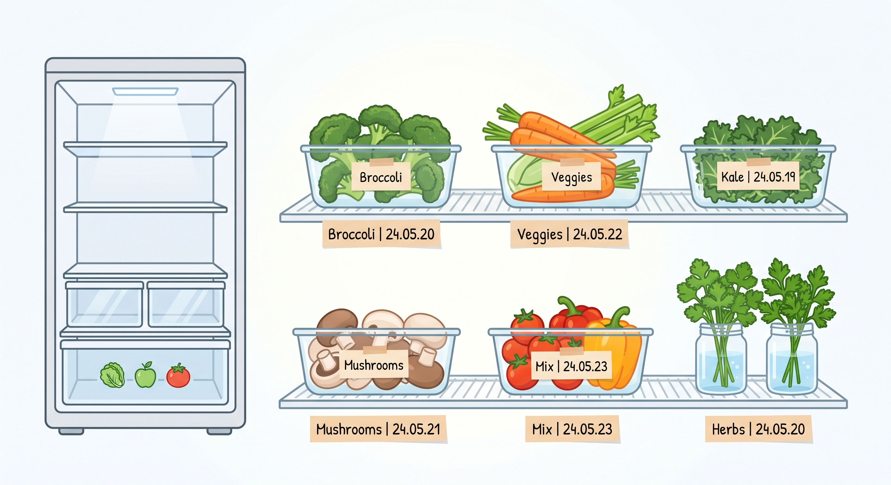

서비스 소개
더 이상 버리는 식재료 없이 신선하게
냉장고 속 식재료를 등록하면 유통기한 임박 순서로 정리해 주고, 남은 재료로 만들 수 있는 요리를 추천해 드립니다.

주요 기능
-
유통기한 임박 순 정렬
빨리 먹어야 하는 식재료를 맨 위에 보여주어 낭비를 막아줍니다.
-
남은 재료 맞춤 레시피 추천
냉장고에 있는 재료만 선택하면 바로 만들 수 있는 간편 요리를 제안합니다.
-
유통기한 3일 전 알림 발송
재료가 상하기 전 미리 알림을 보내 요리 타이밍을 놓치지 않게 해줍니다.
이용 방법
- 구매한 식재료 이름과 유통기한을 입력합니다.
- 유통기한 임박 알림을 확인하고 추천 레시피를 고릅니다.
- 요리 후 사용한 식재료를 목록에서 삭제합니다.